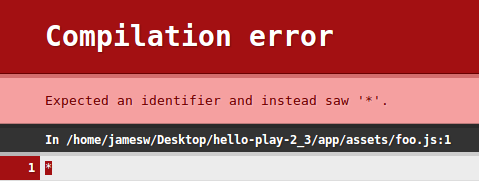

Introducing sbt-web
A Node & WebJar Compatible Asset Pipeline for the Typesafe Platform
James Ward ~ @_JamesWard
Asset Pipelines
- Source linting
- Source files => "executable"
- Executable => Optimized / Minified
- Executable => Fingerprinted
- Executables => Concatenated
- Testing
sbt-web
An asset Pipeline on top of sbt
- Incremental
- Parallel
- Node native or Node emulated (Trireme)
- Dependency management with WebJars and/or NPM
- Any sbt project
Future Asset Compilers
- Uglify
- ScalaJS
- Sass
- Stylus
Current Status
- sbt-* 1.0.0-M2a
- Super easy API
- Play 2.3 M1
Setup for Play 2.3 M1
project/plugins.sbt
addSbtPlugin("com.typesafe.sbt" % "sbt-blah" % "1.0.0-M2a")
sbt-jshint
app/assets/foo.js

sbt-coffeescript
app/assets/foo.coffee
$ ->
console.log("hello, world from coffeescript")
app/views/foo.scala.html
<script src='@routes.Assets.at("index.js")'></script>
sbt-less
app/assets/foo.less
body {
background-color: #000066;
}
app/views/foo.scala.html
<link rel='stylesheet' href='@routes.Assets.at("index.css")'>
sbt-digest
activator start || activator stage || activator dist
find target/web -name "*.md5"
sbt-mocha
test/assets/FooSpec.js
var assert = require("assert");
describe("Foo", function() {
it("should correctly add numbers", function() {
assert.equal(2, 1+1);
});
});
sbt-rjs
app/assets/main.js
requirejs.config({
paths: {
'jquery': ['./lib/jquery/jquery'],
'bootstrap': ['./lib/bootstrap/js/bootstrap']
},
shim: {
'jquery': { exports : '$' },
'bootstrap': { deps: ['jquery'] }
}
});
require(['bootstrap'], function(bootstrap) {
$('#myModal').modal();
});
<script data-main="@routes.Assets.at("main")" src="@routes.WebJarAssets.at(WebJarAssets.locate("require.js"))"></script>